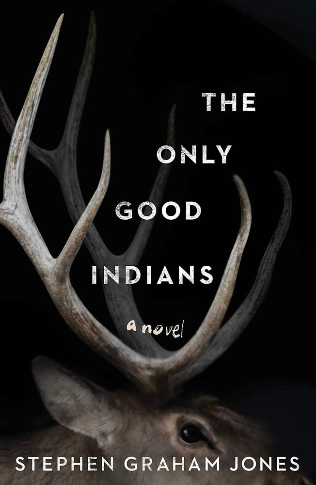

Book Review: The Only Good Indians
Rating: 10/10
Overview: This book is a gripping horror novel that intertwines the lives of four Native American men with a chilling legacy from their past. A decade after a haunting event, the repercussions begin to terrorize them in ways they never imagined. This tale uniquely blends psychological horror with poignant reflections on cultural identity and the inescapable shadows of history

Introduction
Stephen Graham Jones’ ‘The Only Good Indians’ is a horror story that merges psychological suspense with a deep examination of cultural identity, making it a unique and compelling read. In this review, I’ll break down my thoughts into two main sections.
In Part 1. Spoiler-Free I’ll provide spoiler-free notes, offering insights into the novel’s themes and Jones’ crafty narrative techniques without giving away any key plot details. This section is perfect for readers deciding whether to pick up the book.
In Part 2. Spoilers will contain notes with spoilers. Here, I’ll discuss specific aspects of the story and themes more deeply, examining how Jones portrayed the intertwining of past traumas with the present. This part is intended for those who have read the book or do not mind spoilers.
Throughout this review, I aim to highlight how “The Only Good Indians” stands out not just as a work of horror but as a poignant commentary on the enduring impacts of history and culture. Join me as we explore this chilling yet thought-provoking novel.
Part 1. Spoiler-Free
1.1. Introduction to Horror
This was my first foray into horror novels. I chose “The Only Good Indians” specifically because I was unfamiliar with it, hoping to be genuinely surprised by the story’s twists. And indeed, I was not disappointed.
From the first chapter, the novel sets a brisk pace and a tone that blends the ordinary with a sense of impending dread. The graphic content, while occasionally shocking, serves to intensify the atmosphere without overshadowing the plot. There’s a rich layer of mystery throughout the book, which I found thoroughly engaging and well worth the venture into this new genre.
1.2. Cultural Identity and Heritage
The novel is not only a narrative about personal survival but also a profound exploration of the complexities of cultural identity. Jones showcases how traditions and ancient beliefs can persist in contemporary life, influencing the characters’ actions, their worldviews, and their interactions with both the spiritual and the physical worlds.
The heritage of the characters is not merely a backdrop but acts as a pivotal force in driving the plot and deepening the horror elements of the story. Through vivid descriptions and culturally specific details, Jones brings to life the distinct experiences of his characters, providing readers with a deeper understanding of their lives and the pressures they face from both within and outside their community.
Furthermore, the book engages with the idea of legacy—what one generation passes down to the next and how these inheritances can shape lives in ways that are both visible and hidden. The reverence for traditional practices and the struggle with the ghosts of history are woven into the narrative, creating a rich tapestry that highlights the resilience and complexity of Native American life.
By embedding these themes in a horror context, Jones not only tells a thrilling story but also invites readers to reflect on the cultural struggles and triumphs of his characters, offering a poignant commentary on identity, community, and the indelible marks of heritage. This approach enriches the reader’s experience, providing not just suspense but a meaningful exploration of what cultural identity means in a modern world fraught with both past traumas and present challenges.
1.3. Suvivor’s Guilt and Consequences of the Past
The narrative is heavily centered on the concept of survivor’s guilt, where the characters are not only dealing with the immediate threats that emerge around them but also grappling with the emotional and psychological consequences of events that occurred many years prior. This guilt shapes their decisions, relationships, and perceptions of self, creating a tension that is both internal and external.
The consequences of past actions are portrayed as inescapable and lingering, suggesting that the past is never truly past but continues to influence the present in profound and often horrifying ways. The characters find themselves haunted not just by a supernatural presence but by the weight of their own memories and the choices they made. This intersection of personal history and supernatural consequence creates a compelling narrative that questions the possibility of ever truly escaping one’s actions.
Jones uses these themes to explore deeper societal issues as well, reflecting on how historical injustices and personal traumas are interlinked and how they continue to affect individuals and communities. The novel suggests that the horrors of the past are not easily forgotten and can resurface, sometimes monstrously, shaping the lives of those involved for years to come.
1.4. Nature and Supernatural
Jones uses a blend of nature and the supernatural to explore themes of respect, desecration, and reconciliation. The natural world in “The Only Good Indians” is not just a passive setting but a dynamic force that interacts with the characters, influencing their lives and driving the narrative forward. This approach heightens the horror elements of the story, as the environment and its spirits become sources of tension and terror that the characters must navigate.
The supernatural occurrences in the novel are deeply tied to these natural settings, suggesting that the land itself holds memories and has the power to manifest them in ways that are both protective and punitive. This connection emphasizes the characters’ respect for and symbiosis with their environment, as well as the consequences when this balance is disrupted.
1.5. Socail Commentary
Jones’s narrative is not just a horror story but also a poignant examination of the social issues that affect Native American people. Through the lives of his characters, the novel addresses themes such as systemic oppression, cultural erasure, and the struggles with identity that many indigenous people face. These elements are woven into the fabric of the story, reflecting real-world concerns in a manner that is both engaging and enlightening.
The horror elements of the book often serve as metaphors for the larger, more insidious fears that these communities contend with—such as the loss of cultural identity and the ongoing effects of historical traumas. The supernatural occurrences in the novel can be seen as manifestations of these larger societal issues, making the horror feel both immediate and deeply symbolic.
Jones also touches on resilience and the importance of community solidarity in facing these challenges. The characters’ responses to the supernatural threats are informed by their cultural heritage and collective experiences, showcasing the strength found in shared histories and traditions.
1.6. The Horror of Everyday Life
Jones cleverly elevates everyday scenarios and settings to create vessels of horror. This technique not only blurs the lines between the ordinary and the supernatural but also heightens the tension and suspense throughout the novel. The familiar becomes sinister, turning the characters’ routine lives into a landscape where horror can emerge at any moment.
This theme serves as a powerful metaphor for the internal and external battles the characters face. The everyday struggles of the characters, who deal with issues like identity, cultural heritage, and personal demons, are amplified by the horror elements, suggesting that sometimes the real terror lies in the challenges we encounter daily.
Jones uses this setting to reflect on how the past continually shadows the present, making even simple decisions or encounters fraught with deeper meanings and potential dangers. The ordinary moments are depicted as being just as capable of producing fear and anxiety as the extraordinary ones, which makes the horror in the novel more relatable and unnerving.
1.7. Narrative Techniques
Listening to “The Only Good Indians” on audiobook provided a uniquely immersive experience, thanks largely to the narrator’s masterful delivery. The narrator’s voice modulation was exceptional, adeptly building suspense and accentuating the story’s eerie atmosphere. Each character was brought to life with distinct vocal nuances, making the narrative easy to follow and deeply engaging. The pacing was particularly effective—swift during climactic scenes to heighten tension, and slower during more reflective moments, allowing the story’s deeper themes to resonate. Furthermore, the narrator’s sensitivity to the cultural elements of the book added a layer of authenticity that enriched my understanding and appreciation of the narrative. Overall, the audiobook version added a compelling auditory dimension to the novel, making my experience both memorable and haunting.
Part 2. Spoilers
- Warning: The following contains spoilers -
2.1. Title Significance
The title of Stephen Graham Jones’ novel, “The Only Good Indians,” carries profound thematic and symbolic weight, particularly as it echoes the historically violent phrase, “The only good Indian is a dead Indian.” This saying, which became popular in the late 19th century, reflects the brutal attitudes and genocidal sentiments directed toward Native American populations during the westward expansion in the United States. By choosing this title, Jones engages in a subversive act of linguistic reclamation, turning a phrase that epitomizes racial hatred into a critique of those very notions.
The novel itself mirrors the violence of this old saying, dealing with both the literal and metaphorical hauntings of the characters by their past actions and the broader historical injustices inflicted upon their ancestors. This reflection is not only about survival but also about the struggles of cultural identity in contemporary society, as the characters grapple with the implications of being considered a “good” Indian.
The irony of using such a historically derogatory statement as the title adds a layer of critique; through the stories of the characters, Jones highlights the resilience and humanity of Native American individuals, countering the dehumanizing undertones of the original phrase. The title also prompts readers to consider deeper moral and ethical questions about identity, redemption, and the nature of good and evil, challenging entrenched stereotypes and inviting a reexamination of the complexities that these judgments entail. Through this charged title, Jones ensures that the themes of historical context and contemporary reality are palpable, enriching the narrative to transcend horror and become a poignant commentary on society.
2.2 Character Dynamics and Background
This book offers a rich tapestry of character complexity and moral ambiguity, particularly through characters like Gabe and Victor Yellow Tail. These characters are depicted with depth and nuance, navigating a world where choices are often constrained by external forces and internal conflicts. This portrayal effectively showcases their roles as anti-heroes, individuals who grapple with their flaws and the moral complexities of their decisions.
Gabe, one of the four friends central to the story, exemplifies the anti-hero archetype. His life is marked by a blend of good intentions and flawed actions, creating a character that is both relatable and tragic. Gabe’s decisions are often influenced by the immediate needs and pressures of his environment, reflecting the limited choices available to him. His struggles with alcohol, his role as a father, and his attempts to maintain a semblance of normalcy in the face of haunting past actions all contribute to a portrait of a man caught between the desire for redemption and the pull of his circumstances. Gabe’s moral ambiguity is highlighted by his participation in the elk hunt that sets the tragic events of the novel in motion, an act driven by youth and rebellion that later returns to haunt him.
Victor Yellow Tail, on the other hand, serves as a foil to the main group of friends. As a tribal police officer, Victor represents an uncomfortable intersection of community and authority who is seen as someone who has ostensibly made ‘better’ choices than his peers. His role as a law enforcer is doubly contentious as he is seen not just as upholding the law, but specifically as enforcing “the white man’s law” on reservation land. This position places him in a delicate balance between his duties and his cultural identity, making him a figure of both respect and resentment within the community. Victor’s interactions with the community, and his ultimate fate in the story, serve to underline the themes of justice and retribution that are central to the novel. His character raises questions about the nature of authority and righteousness within a community still grappling with its history and the ongoing challenges of its present.
Both Gabe and Victor, in their respective roles, navigate the world with a complex mixture of heroism and villainy. Their stories highlight the inherent challenges in defining morality within a community where historical injustices and personal failures intertwine. Through these characters, Jones explores the idea that morality is not a fixed state but a fluid dynamic, influenced by past actions, personal motivations, and the broader social and cultural forces at play.
2.3. Cultural and Tribal Identities
At the heart of the novel, the tensions between Crow and Blackfeet cultures are embodied in the characters and their backgrounds, subtly informing their interactions and conflicts. Jones does not explicitly detail the historical conflicts between the Crow and Blackfeet in the novel, but the weight of history is palpable in the characters’ lives. Historically, the Crow and Blackfeet were often in conflict over territory and resources, a backdrop that enriches the narrative’s tension. This history adds layers of meaning to the characters’ struggles with belonging and loyalty, highlighting how historical inter-tribal dynamics continue to affect contemporary relationships and self-perception.
Moreover, the novel touches on the internalized prejudices and stereotypes that can prevail within and between Native American communities. Through the characters’ interactions and internal monologues, Jones subtly addresses how these historical animosities can lead to internalized racism and self-hatred, complicating the characters’ abilities to form a cohesive identity. The struggle for identity and acceptance is portrayed not just as an internal battle but as a challenge shaped by the long shadows of inter-tribal histories.
In tying these personal and inter-tribal tensions to the broader themes of the novel, Jones skillfully uses the horror genre as a metaphorical landscape to discuss cultural disintegration and identity conflicts.
2.4. Symbolism and Mirroring
The illegal elk hunt that the characters partake in their youth serves as a critical symbol in the novel. This act of killing a pregnant elk in a restricted area is not only a breach of legal and cultural norms but also a violation of sacred life, which mirrors the historical violence inflicted upon Native American communities. This act of violence against nature symbolically represents the broader violence against Native Americans—both are acts of invasion and disrespect against beings seen as lesser by an oppressive force. The elk, particularly because it was pregnant, symbolizes not just life but potential life, reflecting the deep cuts made into the fabric of Native communities, where not only lives were taken but potential futures were destroyed.
The mirroring effect is a powerful tool used by Jones to draw parallels between individual actions and historical events. By aligning the slaughter of the elk with the genocidal history faced by Native Americans, the novel invites readers to reflect on the cyclical nature of violence and the ways in which historical injustices continue to resonate in contemporary settings. The characters’ personal guilt and the supernatural retribution they face are not just about their actions but also about their roles within these larger historical cycles. They become stand-ins for broader cultural narratives, living out themes of retribution and guilt that have been part of their heritage.
2.5. The Elk-Headed Woman
As a figure of horror, the Elk-Headed Woman is terrifying and relentless. Her appearances are marked by a chilling blend of the natural and the supernatural, as she combines elements of a vengeful spirit and a wronged animal. Her pursuit of the main characters, who were responsible for the death of her elk form and her unborn calf during an illegal hunt, is both brutal and ghostly, imbuing the story with a palpable sense of dread and inevitability. Her actions are gruesome and her presence suffuses the novel with a tension that is typical of horror but with an added layer of psychological depth. This depth comes from her motivations, which unfold as the story progresses, reshaping the reader’s understanding of her role in the narrative.
The revelation of the Elk-Headed Woman’s desire for her lost baby introduces profound themes of motherhood and loss, adding layers to her character that extend beyond mere vengeance. This aspect of her motivation reveals her actions not just as blind revenge but as a mother’s grief-stricken response to the violent loss of her child. In this light, her relentless pursuit of the men reflects the depth of her loss and the lengths to which she will go for what she sees as reconciliation or retribution. This revelation complicates the reader’s perception of her as merely a villain, inviting a more empathetic understanding of her fury and actions.
Moreover, the Elk-Headed Woman’s presence and motivations are deeply intertwined with the characters’ feelings of guilt and the symbolic weight of their past actions. She embodies the consequences of their youthful indiscretions, transforming their guilt into a literal haunting that stalks them throughout their lives. This connection emphasizes the theme that the past is never truly past when its wounds remain unaddressed. The Elk-Headed Woman, therefore, stands as a constant reminder of the characters’ responsibility for their actions and the pain they have caused.
2.6. The Final Girl
In the novel, Denora is positioned as the “final girl.” Unlike the typical final girl trope where the character often begins as somewhat innocent or unassuming, Denora’s role is steeped in cultural identity and personal resilience from the outset. She is not only a survivor but also a representation of a new generation grappling with both the legacy of the past and the pressures of the present.
Denora’s confrontation with the Elk Head Woman during the climactic scenes of the book redefines the trope. Here, the antagonist is not merely a slasher or a faceless monster but a manifestation of cultural trauma and historical violence. The Elk Head Woman is a symbol of the consequences that come from the characters’ disconnection from their traditions and their community.
Denora’s showdown with this spirit is significant because it is not just about physical survival but about cultural survival and identity. Her role as the final girl underscores a thematic focus on healing and reconciliation. It highlights the possibility of overcoming generational traumas through understanding and facing the horrors of the past directly.
This confrontation also shifts the perspective on how strength and vulnerability are portrayed in horror narratives. Denora’s strength comes from her deep connection to her culture and her ability to face the truth of her community’s and her ancestors’ actions. This makes her survival not just a personal victory but a communal hope for renewal and change.
By placing Denora at the center of this final confrontation, Jones not only subverts the traditional final girl trope but enriches it, making it a vehicle for deeper commentary on resilience, identity, and redemption within Native American communities. Her survival is symbolic of the broader survival and adaptation of her culture, offering a powerful message about the endurance of heritage and the strength found in facing one’s history.
Conclusion
In conclusion, “The Only Good Indians” by Stephen Graham Jones is a profound exploration of heritage, identity, and the inescapable shadows of the past. Through a masterful blend of horror and cultural commentary, Jones not only crafts a narrative that is as terrifying as it is thought-provoking but also challenges the reader to reflect on the deeper meanings of justice, retribution, and survival. The novel’s vivid portrayal of its characters’ struggles with their identities and the haunting repercussions of their actions offers a unique lens through which to view the broader issues facing Native American communities today.
This book is a must-read for anyone interested in stories that offer more than just scares; it is for those who seek narratives that provoke, educate, and resonate long after the last page is turned. Stephen Graham Jones’s work is a testament to the power of horror as a genre to illuminate the darkest corners of both history and the human heart.